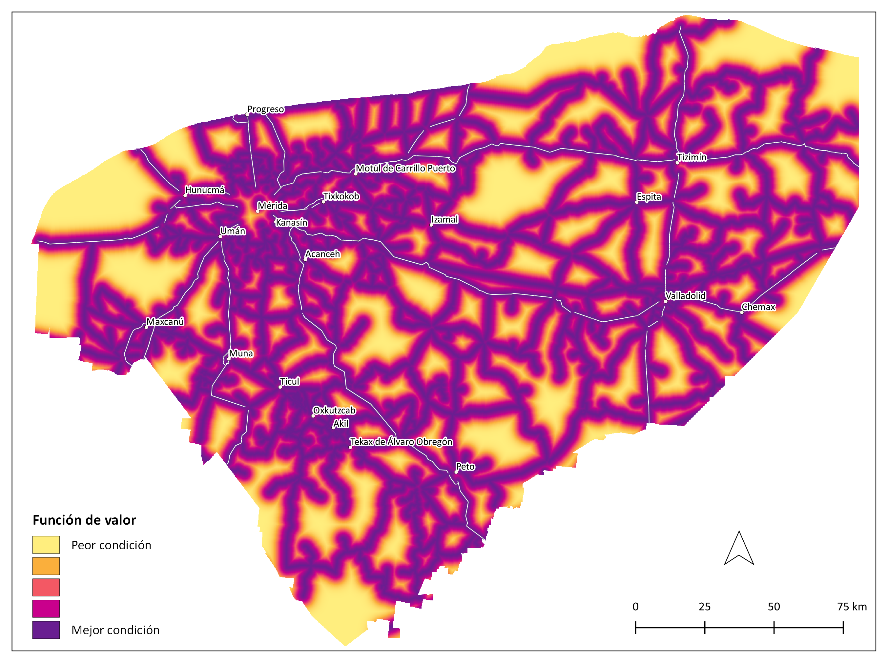
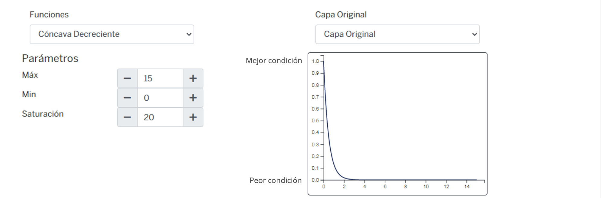
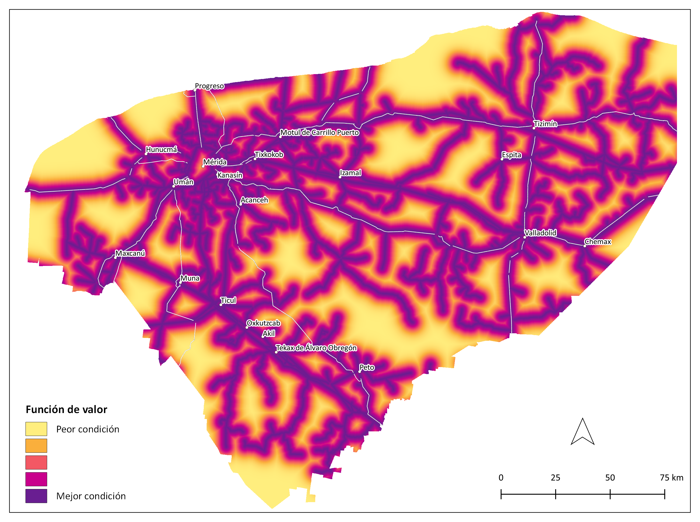
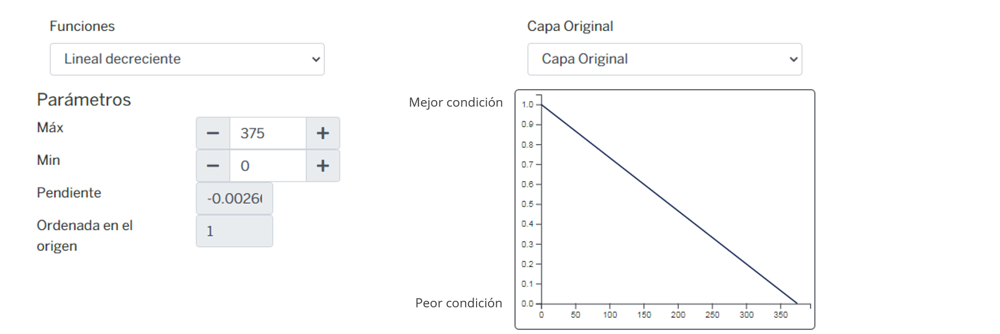

Pecuario porcino y avícola-En proceso de actualización¶
Meta¶
Fomentar el desarrollo, el crecimiento y la descentralización de empresas porcícolas y avícolas para que su operación se realice de manera de ordenada y sustentable, promueva modelos de producción no convencionales a partir de porcinos y aves localmente adaptados e incorpore esquemas tecnológicos para reducir y mitigar impactos, de manera que se incremente la sostenibilidad ambiental y contribuya a mejorar la salud pública.
1.1 Modelo de decisión¶

1.2 Atributos¶
1.2.1 Infraestructura¶
| Atributo | Definición |
|---|---|
| Caminos | Distancia a carreteras pavimentadas de 2 carriles y secundarias |
| Distancia a redes eléctricas: | Distancia a redes eléctricas CFE. |
| Distancia a rastro y empacadora | Infraestructura industrial complementaria (incluye establecimientos de inspección federal, plantas transformadoras de productos y empacadoras). Distancia a rastros y empacadoras porcinos y avícolas. |
| Puerto Progreso | Distancia a Puerto Progreso. |
1.2.1.1 Caminos¶
Distancia a carreteras pavimentadas de 2 carriles y secundarias.
Atributo | Definición Distancia a carreteras | Distancia a carreteras y prolongación Distancia a caminos y veredas | Distancia a caminos y veredas.
1.2.1.1.1 Distancia a carreteras¶
Distancia a carreteras y prolongación.
Insumos
| Capa | Distancia a carreteras y prolongaciones |
|---|---|
| Fuente | Red Nacional de Caminos (RNC) Red vial - INEGI |
| Año | 2019 |
| Campo | TIPO_VIAL |
| Escala | Sin dato |
Parámetros de la función de valor

Función de valor de distancia a carreteras

1.2.1.1.2 Distancia a caminos y veredas¶
Distancia a caminos y veredas.
Insumos
| Capa | Distancia a veredas y caminos |
|---|---|
| Fuente | Red Nacional de Caminos (RNC) Red vial - INEGI |
| Año | 2019 |
| Campo | TIPO_VIAL |
| Escala | Sin dato |
| Unidades | Kilómetros |
Parámetros de la función de valor

Función de valor de distancia a caminos y veredas

1.2.1.2 Distancia a redes eléctricas¶
Distancia a redes eléctricas CFE.
Insumos
| Capa | Distancia líneas de transmisión de energía eléctrica |
|---|---|
| Fuente | Líneas de transmisión INEGI |
| Año | 2012 |
| Escala | 1:50,000 |
| Unidades | Kilómetros |
Parámetros de la función de valor

Función de valor de distancia a redes eléctricas

1.2.1.3 Distancia a rastro y empacadora¶
Infraestructura industrial complementaria (incluye establecimientos de inspección federal, plantas transformadoras de productos y empacadoras). Distancia a rastros y empacadoras porcinos y avícolas.
Insumos
| Capa | Distancia a rastros, sitios de empacado y procesamiento de ganado porcino y avícola |
|---|---|
| Fuente | [1] Infraestructura del sector Agroalimentario centros de sacrificio y TIF; [2] Polígonos de localidades. Marco Geoestadístico. Censo de Población y Vivienda INEGI y [3] Datos de indicador. Directorio Estadístico Nacional de Unidades Económicas (DENUE) INEGI |
| Año | [1] Sin dato; [2] [3] 2020 |
| Escala | Localidad |
| Unidades | Kilómetros |
1.2.1.4 Puerto Progreso¶
Distancia a Puerto Progreso.
Insumos
| Capa | Distancia a Puerto Progreso |
|---|---|
| Fuente | [1] Ubicación de los principales puertos de el estado de Yucatán POETY y [2] Red Nacional de Caminos (RNC) Red vial - INEGI |
| Año | [1] 2002; [2] 2019 |
| Campo | [2] TIPO_VIAL |
| Escala | Sin dato |
| Unidades | Kilómetros |
Parámetros de la función de valor

Función de valor de Puerto Progreso

1.2.2 Biofísicos¶
| Atributo | Definición |
|---|---|
| Disponibilidad de agua | Distancia al acuífero o nivel piezométrico. Costo de extracción de agua del acuífero |
| Cobertura | Vegetación o uso de suelo actual |
1.2.2.1 Disponibilidad de agua¶
Distancia al acuifero o nivel piezométrico. Costo de extracción de agua del acuífero.
Insumos
| Capa | Nivel freático |
|---|---|
| Fuente | Nivel freático POETY |
| Año | Sin dato |
| Campo | n_freat_m |
| Escala | Estatal |
| Unidades | Metros |
1.2.2.2 Cobertura¶
Vegetación o uso de suelo actual.
Insumos
| Capa | Uso del suelo y vegetación |
|---|---|
| Fuente | Conjunto de datos vectoriales de la carta de Uso del suelo y vegetación. Serie VI. Conjunto Nacional INEGI |
| Año | 2017 |
| Campo | descripcio |
| Escala | 1:250,000 |
| Unidades | Adimensional |
1.2.3 Mano de obra¶
| Atributo | Definición |
|---|---|
| Rural-Urbano | Distancia a localidades rurales-urbanas => 2500 y <15,000 habitantes. |
| Rurales | Distancia localidades rurales < 2,500 habitantes. |
| Urbanos | Distancia a localidades urbanas >= 15,000 habitantes. |
1.2.3.1 Rural-Urbano¶
Distancia a localidades rurales-urbanas => 2500 y <15,000 habitantes.
Insumos
| Capa | Distancia a localidades rurales - urbanas (entre 2,500 y 15,000 habitantes) |
|---|---|
| Fuente | [1] Polígonos de localidades. Marco Geoestadístico. Censo de Población y Vivienda INEGI y [2] Datos de indicador. Censo de Población y Vivienda. Principales resultados por localidad (ITER) INEGI |
| Año | 2020 |
| Campo | [2] POBTOT |
| Escala | Localidad |
| Unidades | Kilómetros |
1.2.3.2 Rurales¶
Distancia localidades rurales < 2,500 habitantes.
Insumos
| Capa | Distancia a localidades rurales (menos de 2,500 habitantes) |
|---|---|
| Fuente | [1] Polígonos de localidades. Marco Geoestadístico. Censo de Población y Vivienda INEGI y [2] Datos de indicador. Censo de Población y Vivienda. Principales resultados por localidad (ITER) INEGI |
| Año | 2020 |
| Campo | [2] POBTOT |
| Escala | Localidad |
| Unidades | Kilómetros |
1.2.3.3 Urbanos¶
Distancia a localidades urbanas >= 15,000 habitantes.
Insumos
| Capa | Distancia a localidades urbanas (mayor o igual a 15,000 habitantes) |
|---|---|
| Fuente | [1] Polígonos de localidades. Marco Geoestadístico. Censo de Población y Vivienda INEGI y [2] Datos de indicador. Censo de Población y Vivienda. Principales resultados por localidad (ITER) INEGI |
| Año | 2020 |
| Campo | [2] POBTOT |
| Escala | Localidad |
| Unidades | Kilómetros |